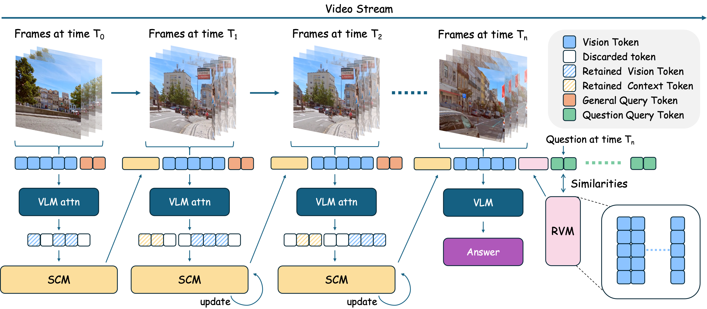

Paper Analysis
01 · Two Different Ways of Losing History
流式模型面对连续视频时，旧内容可能在反复压缩中被删掉；也可能仍在外部档案中，却没有在具体问题到来时送回模型。ReMem 用两种 memory 分别处理这两个问题，目标是文字问答，不是流式三维重建。
Streaming Context Memory（SCM）提供固定预算附近的持续摘要，写入时不知道未来问题；Retrieved Vision Memory（RVM）保存可检索历史，在知道问题后选择相关片段。它不是新语义分支，也没有新增 loss，而是复用 VLM 的 attention 与 Q/K 表示。
论文用首张 needle 图加越来越多干扰图做 Visual NIAH 探针，观察早期证据是否还可用。这个设计有助于定位长时信息损失，但 yes/no needle 任务不能覆盖动态事件、细粒度时序和任意未来查询。
Paper Analysis
02 · Reading Figure 2 as a Streaming Process

Li Yiheng et al. · Original figure, unmodified · Copyright retained by the authors · Paper & Caption ↗
Figure 2 从左向右按 chunk 接收视频。视觉编码器和投影层产生当前视觉 token，与之前保留的 SCM token 合并；通用描述提示产生 text-to-vision attention，筛选后作为下次上下文。
右侧绿色 question query 出现后，RVM 对历史片段打分，取回相关视觉内容，与当前上下文一起送给 VLM 回答。它不是从一个平均 key 向量复原整段视频：平均 key 只是检索索引，实际回放还需要能访问对应片段或 token。
训练与在线使用要分开理解：基础 VLM 本身已预训练，ReMem 没有新增参数训练。每个 chunk 的注意力打分、压缩和问题到达后的检索都是推理计算；training-free 不表示零计算成本。
Paper Analysis
03 · General Query Compression and Position Handling
GQC 用固定通用提示引导描述视频，而不是按当前具体问题压缩，以免提前丢掉未来问题需要的内容。附录算法对各层、各头 attention weights 取平均，再取文本 query 指向图像 key 的子矩阵，对文本位置平均，保留最高的 floor(rN) 个视觉 token。r 因而是保留比例，0.7 表示保留 70%，不是删掉 70%。
正文 Eq. 2 把乘 V 后的 attention output 也称为 attention scores；筛选细节应以附录伪代码中的 weights 为准。该区别决定分数是否对应单个视觉 key，复现时不能直接对输出特征做同样排序。
被保留 token 保留原有位置标识，当前片段的时间位置加累计帧偏移，避免每段都重置到起点。这样做保持稀疏 token 的原始时空关系；但持续增大的时间索引仍可能超出位置编码训练范围，论文没有证明任意长序列的外推可靠性。
如果每个 chunk 有固定 v 个新 token，忽略取整，SCM 长度满足 n_t=r(n_(t−1)+v)，其极限为 rv/(1−r)。这是根据更新式的长度推导，说明长度有界；不意味着每一步严格等长，更不意味着任意早期信息都仍在。
S_t = GQC(S_(t−1) ⊕ V_t, r) score(j) = mean_(layers,heads,text positions) A_text→vision(:,j) retain TopK(score, floor(rN)) n_t ≈ r(n_(t−1)+v) → rv/(1−r), for 0<r<1
Paper Analysis
04 · Query-Time Retrieval and Its Storage Requirement
每段历史的视觉 key 沿 token 维度平均得到 k̄_i；具体问题的 query 也平均得到 q̄。RVM 按余弦相似度排序，默认取回最高分的一段，再和 SCM、当前输入一起回答。buffer 满后删除最老条目。
这提供了“持续摘要之外的细节回放”，但回放能力受 buffer 范围限制：一段证据既被 SCM 丢弃，又离开 RVM，就无法靠这套机制重新获得。论文称 fixed-size memory，不等于无限时距下不遗忘。
文中没有给出足够清楚的完整存储账本，包括 RVM 的明确容量、回放视觉内容如何驻留与搬运等。只有 key 数量或一次读入 token 数不足以确定总内存；本笔记不填造这些配置。
检索用内部 Q/K 的余弦，不等于有对比学习监督的语言语义匹配器。池化可能弱化短暂事件与局部细节，所以仍需通过最终问答与检索消融检验，而不能只看相似度形式。
k̄_i = mean_tokens K(V_i) q̄ = mean_tokens Q(question) s_i = cos(q̄,k̄_i) i* = argmax_i s_i
Paper Analysis
05 · What the Main Results Establish
主表对 Qwen2.5-VL-7B 使用 1 fps：SQA 43.6→45.6，MCU 25.2→36.8，ACU 24.8→44.8。SQA 关注连续问题，MCU 与 ACU 更强调误导上下文和异常理解。收益在不同任务上明显不均匀。
OVO 的 EPM/ASI/HLD 为 43.8/57.4/22.6→44.3/60.8/29.6，回溯平均 41.3→44.9；同表 OASIS 回溯平均为 46.2。因此原文“超过其他流式方法”的概括不能替代逐表比较。
离线 VideoMME 的 Qwen2.5 平均只从 64.8 到 65.2。Qwen3-VL 的短视频项从 79.7 降到 78.8，平均从 70.8 到 70.9。可以说方法在这些设置下保留了大部分一般视频能力，不能说所有任务都显著改善。
基线表还包含不同 fps 和不同模型；最稳妥的归因是同一底座前后对照，不能只按总榜数值判断 memory 结构优劣。
| Qwen2.5-VL-7B · Table 1 | Base | ReMem | Change (pp) |
|---|---|---|---|
| SQA ↑ | 43.6 | 45.6 | +2.0 |
| MCU ↑ | 25.2 | 36.8 | +11.6 |
| ACU ↑ | 24.8 | 44.8 | +20.0 |
| OVO backward average ↑ | 41.3 | 44.9 | +3.6 |
Paper Analysis
06 · Ablations, Prompt Evidence, and Reporting Limits
Table 3 内部，SCM 加位置管理但不检索时 SQA/ACU 为 45.0/38.4，加入 RVM 后为 45.6/44.8，支持检索对 ACU 的补充作用。但这张表的无模块基线是 36.9/34.8，与主表 43.6/24.8 不同；论文未清楚交代差异来源，不能跨两张表计算同一配置的模块贡献。
chunk size 扫参仅使用 SCM：逐帧输入 SQA/ACU 为 35.3/31.0，16 帧为 45.0/38.4，24 帧又降到 42.0/33.2。结果表明中等时间上下文与压缩频率重要，而非越频繁更新越好。1 fps 下 16 帧块还涉及约 16 秒数据跨度，不能把回答延迟当成每帧可即时更新的证据。
检索一、二、三段时 ACU 分别为 44.8、41.2、38.2，多取片段反而下降。它支持当前检索和输入方式下的噪声折中，不说明历史本身有害。
通用提示 attention 与具体任务 attention 的平均余弦相似度为 92.7%，高于 hooking 的 82.1%。但检验仅覆盖 SQA 的 250 问，且相似度高不保证 top-k 保存了每个未来任务需要的关键 token。尤其不能将其直接推广到主表收益更大的 MCU/ACU。
附录 OVO 全表中带 † 的任务结果取多个 chunk size 的逐任务最好值，不代表一个固定部署配置。部分其他表还存在均值或增量标注不一致；本文只采用核对过的单项数值，不复述笼统 SOTA 结论。
Paper Analysis
07 · Efficiency and Relevance to Our Memory Design
效率测试在单张 80 GB H100、SQA、r=0.7、chunk=16、1 fps 设置下，输入到 512 帧时报告约 1 秒响应延迟和约 32 GB 显存平台。它是有限区间的实测，不足以证明所有时长、分辨率和问题频率下总成本恒定。还需区分视觉编码、持续更新、问题检索及回答生成的开销。
与 MaLoW 比较，ReMem 把历史重新送回输入，MaLoW 把历史变成动态权重；与 Keepsake 比较，ReMem 的回放 buffer 仍按年龄移除，而不是重新评估替代性。二者分别提醒我们关注“压缩丢失”与“实际读取”。
对语义写入 LingBot-Map 的启发是：写入时对未来任务有用的信息未必等于当前高注意力信息。应在后续帧上评估固定预算的收益，同时控制当前位置编码和当前帧增强；增加语义后若只改善当前输出，仍不能归因于 memory。
这篇是训练自由的视觉 token 筛选与回放，不提供语义 loss 或几何 loss 的梯度证据。本文依据原文、附录及伪代码分析，未核实可运行作者实现，也未将其结构直接迁移到我们的模型。
Discussion
Reading Questions
Does query-independent mean no prompt is used?
不是。写入使用固定通用描述提示，只是不依赖未来用户的具体问题。
Does r=0.7 mean dropping 70% of tokens?
不是。附录 k=floor(rN)，表示保留 70%。
Can RVM restore content from a pooled key alone?
不能。平均 key 用于定位，还需要可访问的片段或视觉 token 作为回放内容。
Does the attention probe validate every task?
没有。该验证在 SQA 上进行，不能直接保证异常、误导上下文或任意未来问题的保留效果。
References
One original figure, unmodified, with attribution. Included for focused scholarly commentary. The arXiv distribution license is not a Creative Commons reuse license; copyright remains with the authors.
Verified on 2026-10-22. Paper results refer to the linked versions. Repository references were checked on this date.